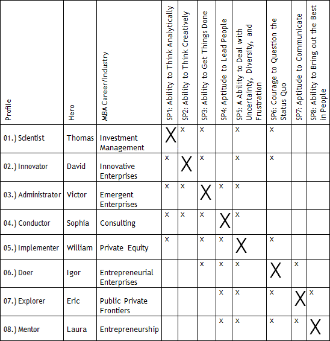

I see. My post-MBA must be attached to what I have built so far.


Exactly, it is as simple as that.

What if I wanted to say that I aim at a radical career shift?
They want to understand my past career choices.
They do. Shall we recap what we have done? On Km 12, you answered the first question below from our Big Synthesis Exercise. Now you will answer the second:
- Big Synthesis Question 1: Where Do You Want to Be?
“In what role do you see yourself working after your MBA?”
- Big Synthesis Question 2: Where Are You?
“Which THREE competences influenced your professional choices and make you confident in achieving your post-MBA professional objectives?”
- Big Synthesis Question 3: What Do You Do Well?
“Which THREE competences helped you achieve the THREE most relevant impacts you’ve had on an individual, or group?”
- Big Synthesis Question 4: What Do You NOT Do Well?
“Describe a setback or a failure that you have experienced. Which competence would have helped you attain success instead?”
- Big Synthesis Question 5: Who Are you?
“Give a candid description of yourself, stressing THREE personal characteristics you feel to be your strengths.”
Oh, okay, we have talked a lot about that. Now I must bring coherence to all my STORIES following my post-MBA career.
Exactly. On Km 12, you said you intend to fight for a position in the industry X…
And I did not say that by chance. After all, I have in my tool belt 3 Competences directly related to the career/industry/function at which I am targeting.
Yes, remember that the Megaron Marathon has a competence-based approach. Ultimately, what matters is to reveal that you master the Competences linked to success in X or Y career.
Oh, so you will finally reveal which of the 3 Competences I must highlight since my plan is to work at an innovative technology company.
Yes, let’s recall: you have analyzed the 8 Competences through the analyses of your 8 STORIES. Now it is time to select the 3 best Competences to support your “Post-MBA Working Hypothesis.”
There is not enough room to sell me under 8 dimensions, I suppose – a hero with 8 superpowers.
It will not look realistic to show that you do well in 8 quite distinct aspects. Here is again the excerpt of an HBS professor’s book that we have already discussed in the Megaron Marathon:
"I am approached regularly by students who are considering a range of job offers. Before getting into their own characteristics and capabilities, I first ask what specific tasks are most critical to each job. Very few people can give a good answer. I point out to them that the key tasks essential to high performance in each of the jobs are likely to vary dramatically. Given the wide disparity in required skills, how realistic is it to think one person could be great at all of them? In most cases, students realize that even though they have been to numerous company presentations and have even met with employees at various levels, they have not focused specifically on the question of key skills. More often, they assessed the likability of the individuals they’ve met and have explored whether the company’s environment felt consistent with their values and aspirations. These criteria are important, but this kind of review doesn’t take the place of a critical analysis of the tasks essential for the success in the job. You must ask these important questions. What makes a great “XYZ” professional? What distinguishes the person at this company (or in this department) who is doing a good job from the person who is doing a great job? What are the key tasks I must do well? Based on these tasks, what are the most important skills I need if I am to succeed here?” Steven Kaplan (What You're Really Meant To Do: A Road Map for Reaching Your Unique Potential)
I understand.
Read this part: “Given the wide disparity in required skills, how realistic is it to think one person could be great at all of them?”
We have already spoken about that – even the Superheroes from comic books hold only 3-4 superpowers.
That’s true. Remember that there will not be enough room to tell the AdCom 8 STORIES. In general, b-schools will ask for 2-3 essays (1000-1200 words maximum).
But there are interviews...
There are. When the interview is with an AdCom member, it lasts on average 35 minutes.
Wow, very little time.
You have to know how to “sell yourself in 30 minutes”. It is imperative to know how to market yourself in only 3 of the 8 Competences analyzed.
And, now, finally, I will know which of the 3 Competences I will highlight from now on. You could have been more generous and revealed such information on Km 1, huh, Megaron?
I did not do so because I did not want you to narrow your options since Km 1. After all, during the interview, you’re very likely to be asked about the other Competences that you have not explored in the essays, but did in your writing exercise.
I see.
There is another reason. It was very important to explore possibilities. Actually, many applicants end up changing 2-3 times their "Post-MBA Working Hypothesis" during the 8 Km of Competence analysis.
I get your point.
Let’s review what they wrote and which Competences they revealed as evidence that they will actually reach their goals. Read Table A below.
Table A – 8 Heroes and their Top-5 Competences

Top-5 Competences?
That is right, Nicholas. If you, for instance, sell a post-MBA career in “Investment Management”...
Like Thomas?
Yes, like Thomas. If you want to sell that you will work, for example, for an American hedge fund that covers LATAM, I would recommend that you have 3 good STORIES related to the 5 Superpowers indicated on the table.
I got that. Why is one of the 5 X’s in capital letter?
I believe that is a mandatory Competence. You must show a great story related to this Competence.
Therefore, if I got it correctly, since I will sell myself as David (Innovator) did, one of my 3 STORIES must be about SP2: Ability to Think Creatively. Is that right?
Yes, and your two other STORIES that reveal the other 2 Competences must be selected within the remaining group.
Ok, Megaron, I am ready. At the end of the day, the process is, as you said, simple: I must be able to tell 3 STORIES that unveil my 3 Competences directly related to my specific post-MBA goal.
Nothing more than that. Roll up your sleeves and get to work. As you’ve done for every Km, now you must go to Action Plan Km 14. There I will explain how I will evaluate your text. Thank you for your effort.
Wish me luck.
Good luck. Keep Running.